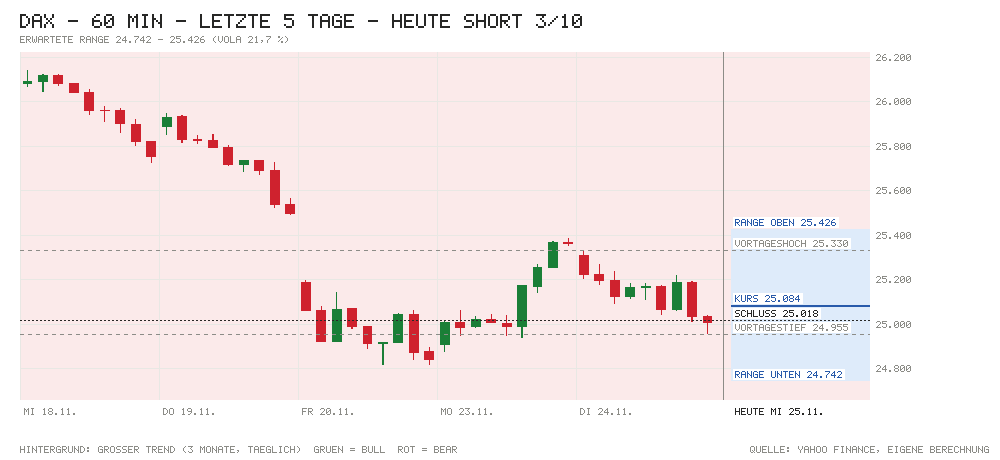

Tagesentscheidung ab 09:03 bis 17:30 Uhr
Den Ausschlag geben der Ausverkauf bei Chipwerten in Asien (Kospi ca. −6 %, Nikkei −2,78 %), US-Futures, die seit dem DAX-Schluss deutlich nachgegeben haben (Nasdaq 100 −2,11 %, S&P −1,18 %), und die neuen US-Zollpläne gegen China, die EU und 14 weitere Länder. Wichtigstes Gegenargument: Der DAX hält sich vorbörslich mit +0,26 % erstaunlich robust, Öl und Renditen fallen. Um 14:30 Uhr kommen US-PCE-Inflation, BIP und weitere Daten, das ist das große Ereignisrisiko. Darum nur 3/10 (eigene Einschätzung).
- Kurs um 09:03
- 25.084
- Erwartete Range
- 24.742 – 25.426
- Eingepreist (Tagesoption)
- ±1,37 %
Einschätzung vom Kurs um 09:03 (Median der Indikationen L&S, J.P. Morgan, UBS) bis zum Xetra-Schluss. Range = ±1 σ für die restliche Handelszeit aus der DAX-Tagesoption (ca. 68 %). Keine Anlageberatung.
Chart

Signale
| Signal | Wirkung | Stand und Einordnung |
|---|---|---|
| Vorgaben USA | Gegenwind | Dienstag: S&P 500 −0,50 %, Nasdaq 100 −1,99 %, Dow +0,85 % (Umschichtung in Substanzwerte). Futures jetzt S&P −1,18 %, Nasdaq −2,11 %: Der KI-Ausverkauf geht weiter, der DAX hat das noch nicht verarbeitet. |
| Eröffnung & erste Minuten | Rückenwind | Indikation 25.084 (+0,26 % zum Xetra-Schluss 25.017,81). Eröffnung und Hoch/Tief zum Abruf n/v. Der DAX zeigt sich robust. |
| Asien & China | Gegenwind | Nikkei −2,78 %, Kospi ca. −6 % (dpa-AFX), Shanghai −2,03 %, CSI 300 −1,65 %, Hang Seng −1,25 %. Chip-Beben in Japan, Korea und Taiwan. |
| Datenüberraschungen | Neutral | Deutsches BIP Q3 +0,1 % q/q, revidiert von 0,2 % (je 0,1 Punkte unter Erwartung). US-Verbrauchervertrauen gestern 103,3 vs. Prognose 92,2. Gemischt. |
| Zinserwartung | Gegenwind | Fed 09.12.: 99 % für +25 Bp., Januar 57 %, März 62 %. EZB-Einlagensatz 2,50 %. Konsens erwartet heute höhere PCE-Inflation. |
| Renditen | Rückenwind | Bund 10J 3,24 % (−3 Bp.), US 10J 4,87 % live (−3 Bp.); US 10J auf Wochensicht −19 Bp. Leichte Entlastung. |
| Kreditstress | Neutral | FRED n/v; Ersatz: HYG −0,12 %, LQD −0,13 % am Dienstag. Kein akuter Stress. |
| Öl & Dollar | Rückenwind | Brent 87,05 USD (−4,76 %, Yahoo; dpa-AFX um 6:55: 90,55 USD), EUR/USD 1,0942 (+0,31 %). Billigeres Öl entlastet. |
| Trend | Rückenwind | DAX unter 21-Tage- (25.971) und 50-Tage-Schnitt (25.602), knapp über dem 200-Tage-Schnitt (25.000). Großer Trend Bear seit 17.11. – passt zur Short-Richtung. |
| Positionierung | Neutral | CFTC nicht erreichbar, n/v. |
| Unternehmensnachrichten | Gegenwind | Neue US-Zollpläne belasten Exporteure und DHL; JPMorgan senkt das Ziel für Mercedes-Benz auf 50 (70) Euro. KI-nahe Werte (SAP, Infineon, Siemens Energy) unter Druck der Nvidia-Ernüchterung. |
| Profi-Sicht | Gegenwind | ING THINK sieht einen vollständigen Abbau riskanter Positionen (Tech-Unsicherheit, Fed-Straffung, Zölle, heißer PCE erwartet). |
| Termine bis 17:30 | Gegenwind | 14:30 US-PCE (Prognose 3,8 % J/J, Kern 3,2 %), BIP Q3, Aufträge langlebiger Güter, Erstanträge – Datenflut vor Thanksgiving. |
Großer Trend (3-Monats-Momentum)
- Stand
- Bear
- Seit
- 17.11. (7 Wechsel in 3 Monaten)
- Schluss 24.11.
- −5,12 % vs. Zins +0,61 %
- Heute dreht es bei Schluss über
- 26.733 (jetzt −6,4 %)
Mit dem Kurs von jetzt bliebe das Signal Bear; eine Wende heute ist praktisch ausgeschlossen. Bull = Rendite der letzten 3 Monate über dem Geldmarktzins, Bear = darunter. Regel: Rendite der letzten 63 Handelstage (≈ 3 Monate) gegen den EZB-Einlagensatz, jeden Tag zum Schluss neu entschieden, Zeitrahmen Tageskerzen (nach Antonacci 2014, dort monatlich über 12 Monate; täglich entschieden dreht es öfter falsch). Keine Anlageberatung.
Bilanz von gestern
24.11.: Long 3/10 – Richtung falsch, −264 Punkte (Kurs zur Notiz 25.282, Schluss 25.018, Hoch 25.330, Tief 24.955). Range ±324 getroffen (Bewegung −264); bisher 53 % von 15 Tagen getroffen (Soll ca. 68 %). Gesamt seit Start: 15 Einschätzungen, Richtung richtig 33 %, Summe −988 Punkte bis Schluss (Schnitt −66).
Marktlage
| Markt | Stand | Veränderung |
|---|---|---|
| DAX (Schluss 24.11.) | 25.017,81 | −1,26 % |
| DAX (Eröffnung heute) | n/v | n/v |
| DAX (jetzt, Kurs zur Notiz 09:03) | 25.084 | +0,26 % |
| S&P 500 (Schluss 24.11.) | 7.201,09 | −0,50 % |
| Nasdaq 100 (Schluss 24.11.) | 26.214,17 | −1,99 % |
| Dow Jones (Schluss 24.11.) | 50.018,70 | +0,85 % |
| US-Futures (S&P / Nasdaq) | 7.132,00 / 25.722,50 | −1,18 % / −2,11 % |
| Nikkei 225 | Eröffnung 58.383,49 → Schluss 57.011,62 | −2,78 % |
| Shanghai Composite | Eröffnung 3.522,59 → Schluss 3.476,47 | −2,03 % |
| CSI 300 | Eröffnung 3.929,84 → Schluss 3.898,24 | −1,65 % |
| Hang Seng | Eröffnung 22.252,81 → aktuell 21.941,00 | −1,25 % |
| EUR/USD | 1,0942 | +0,31 % |
| Brent (USD/Barrel) | 87,05 | −4,76 % |
| Gold (USD/Unze) | 3.523,20 | −1,09 % |
| VIX (Schluss 24.11.) | 26,36 | −0,98 % |
China: Der Ausverkauf bei Technologiewerten erfasste ganz Asien, China und Hongkong verloren moderater als Japan, Korea und Taiwan (dpa-AFX); dazu kommen die US-Zollpläne gegen China. Brent laut dpa-AFX um 6:55 Uhr 90,55 USD (−0,85 USD) – die Yahoo-Zahl kann einen Kontraktwechsel enthalten. Farben bei Brent und VIX nach Wirkung auf Aktien. Die DAX-Eröffnung lag zum Datenabruf (Yahoo, bis 15 min verzögert) noch nicht vor.
Anleihen & Zinsen
| Markt | Stand | Veränderung |
|---|---|---|
| Bund 2J | 3,03 % | −2 Bp. (vs. Bundesbank 24.11.: 3,05 %) |
| Bund 10J | 3,24 % | −3 Bp. (Vortagesschluss 3,27 %) |
| US-Treasury 2J | 4,63 % (live) | ±0 Bp. (offiziell 24.11.: 4,63 %) |
| US-Treasury 10J | 4,87 % (live) | −3 Bp. (Vortagesschluss 4,90 %); 1 Woche (offiziell): −19 Bp. |
| Fed, Sitzung 09.12. | Erhöhung um 25 Bp. erwartet | 99 %; Jan. 57 %, März 62 % |
| EZB-Einlagensatz | 2,50 % | zuletzt +25 Bp. (16.09.) |
| Euro-Hochzins-Aufschlag | n/v (FRED) | n/v |
| US-Hochzins (Ersatz: HYG) | 76,43 USD | −0,12 % (Tag) |
Bund und US live: CNBC; 2J gegen Bundesbank-Vortageswert. US-1-Wochen-Vergleich aus der offiziellen Treasury-Kurve (24.11.: 4,91 % vs. 5,10 %).
Termine heute
- 08:00 Deutschland: BIP Q3 (2. Schätzung) – Ist +0,1 % q/q vs. erste Schätzung 0,2 %; +1,1 % J/J
- 14:30 USA: PCE-Preise Oktober – Prognose +0,3 % m/m, 3,8 % J/J (zuvor 3,6 %); Kern 3,2 % J/J (zuvor 3,1 %); dazu Einkommen und Ausgaben
- 14:30 USA: BIP Q3 (2. Schätzung) – Prognose 3,5 % · zuvor 3,4 %
- 14:30 USA: Erstanträge Arbeitslosenhilfe – Prognose 200–201K · zuvor 203K; Aufträge langlebiger Güter (Prognose n/v)
- 20:00 USA: Beige Book der Fed (nach Xetra-Schluss)
- Morgen Thanksgiving, US-Börsen geschlossen. Keine Quartalszahlen von DAX-Werten.
Nachrichten zu DAX-Werten
- Gesamtmarkt / Zölle: Die US-Regierung bereitet laut WSJ und AP neue Zölle nach Section 301 gegen China, die EU und 14 weitere Länder vor, als Ersatz für die im Februar gekippten Abgaben; für die EU sollen es höchstens 15 % sein, die Sätze sind noch offen. Einschätzung: negativ für Exporteure (Autos, Industrie, DHL).
- KI-/Chipwerte (SAP, Infineon, Siemens Energy): Die Erholung nach Jensen Huangs Rückkehr zu Nvidia verpuffte; Nvidia gestern −5,86 %, Halbleiter-ETF SOXX −8,27 %. Die Commerzbank verweist auf Sorgen um Bewertungen und Verschuldung. Einschätzung: negativ, Asien-Ausverkauf schwappt herüber.
- Mercedes-Benz: JPMorgan senkt das Kursziel auf 50 (70) Euro, bleibt bei Overweight. Einschätzung: leicht negativ, zusätzlich Zollrisiko.
- Unterstützung aus den USA: Gute Quartalszahlen von Dell und HP stützen die Stimmung (dpa-AFX). Einschätzung: dämpft den Tech-Druck etwas.
Profi-Sicht & Positionierung
- ING THINK: FX Daily: Full EMFX unwind underway – feindliches Umfeld, riskante Positionen werden vollständig abgebaut (Tech-Unsicherheit, Fed-Straffung, Zölle, heißer PCE); EUR/USD soll den Dollar-Druck aussitzen, Unterstützung 1,0880 hält. Rates Spark: Treasuries with blinkers on – der PCE-Bericht (Kern 3,2 %) dürfte den Rückgang der US-Renditen stoppen; Bund 10J um 3,25 %. Deutsches BIP: Die Erholung hat an Schwung verloren, „kein Beginn einer nachhaltigen Erholung“.
- Positionierung (COT): n/v – der CFTC-Datendienst antwortete nicht.
Quellen
- Marktdaten der Skripte: Amber Terminal/Yahoo Finance (Kurse, Futures), onvista (Indikationen L&S, J.P. Morgan, UBS; VDAX), Eurex (DAX-Tagesoption ODAP), CNBC (Bund- und US-Kurve), Bundesbank, US-Treasury, EZB-Datenbank, ING THINK (Artikelliste); FRED, Nasdaq-Kalender und CFTC heute nicht erreichbar
- onvista/dpa-AFX: Dax robust, asiatische Börsen klar im Minus (25.11.2026)
- onvista/dpa-AFX: Börsentag auf einen Blick – Robust in Tech-Turbulenzen (25.11.2026)
- finanznachrichten.de: DAX trotzt den Turbulenzen – Neue Zollrunde und US-Datenflut im Fokus
- AP/OPB: US ready to slap tariffs on China, EU and others (24.11.2026)
- Startup Fortune: The Dow closes at 50,019 while Nasdaq drops 1.48% on an AI chip selloff
- FXStreet: US Dollar rebounds ahead of critical PCE inflation data (25.11.2026)
- ING THINK: FX Daily – Full EMFX unwind underway
- ING THINK: Rates Spark – Treasuries with blinkers on
- ING THINK: German economic rebound lost steam in the third quarter